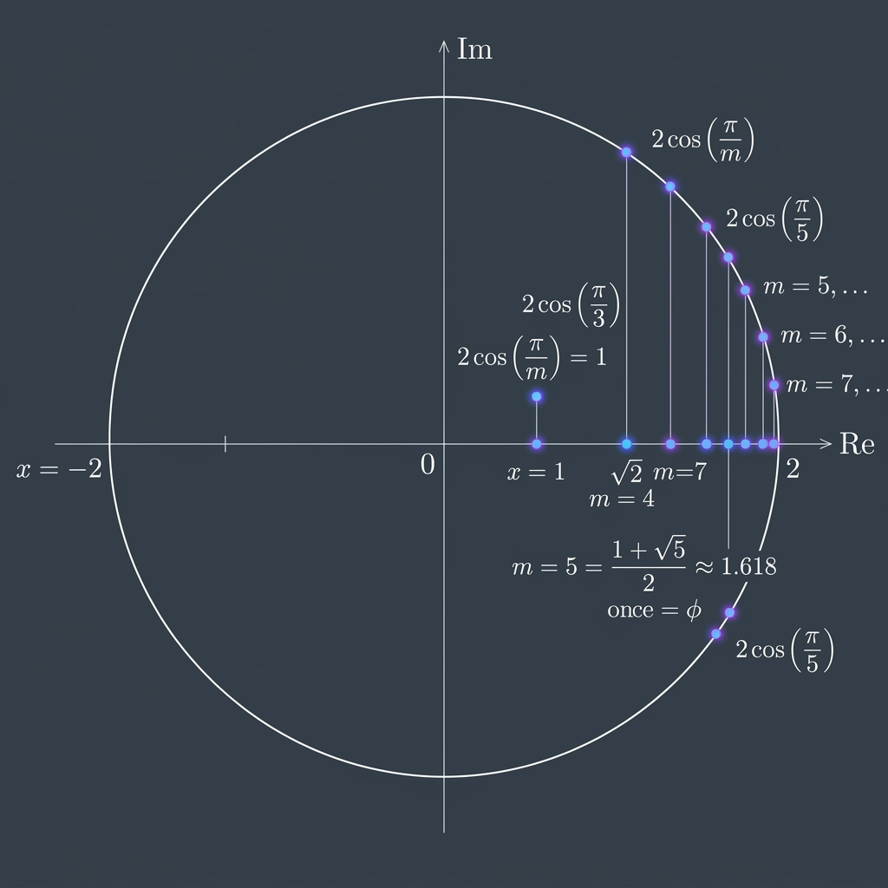

Bounded House of Cyclotomic Integers

Mathematical Exposition
Kronecker's classical theorem on the house of algebraic integers states that if all Galois conjugates of an algebraic integer $\beta$ lie in the closed unit disk ($|\beta_j| \le 1$), then $\beta$ must be a root of unity (or zero). This theorem characterizes the boundary of algebraic integers of small house.
This theorem explores the next natural boundary: the house bound of $2$. If we restrict our attention to the maximal real subfield of a cyclotomic field $\mathbb{Q}(\zeta_n)$, we analyze the real algebraic integers $\beta \in \mathbb{Q}(\zeta_n)^+$ whose house is at most 2:
$$ \text{house}(\beta) \le 2 $$The theorem establishes a discrete spectrum of values for the house below 2. Specifically, either the house of $\beta$ is exactly 2, or it must be of the form:
$$ \text{house}(\beta) = 2 \cos\left(\frac{\pi}{m}\right) $$for some positive integer $m \in \mathbb{N}_{>0}$. This shows that the values of the house of real cyclotomic integers below 2 are highly constrained and cannot be dense.
Mathematical Proof Strategy
Let $K = \mathbb{Q}(\zeta_n)$ be a cyclotomic field, and let $\beta$ be a real algebraic integer in $K$. Under any complex embedding $\varphi: K \to \mathbb{C}$, the value $\varphi(\beta)$ is a real number. If the house of $\beta$ is strictly less than 2, then for all embeddings $\varphi$, we have $|\varphi(\beta)| < 2$. We can associate with each embedding a quadratic equation:
$$ u^2 - \varphi(\beta) u + 1 = 0 $$Since $|\varphi(\beta)| < 2$, the discriminant $\varphi(\beta)^2 - 4 < 0$, which means the roots $u$ of this equation are complex conjugates lying strictly on the unit circle ($|u| = 1$). Crucially, because $\beta$ is an algebraic integer, $u$ is also an algebraic integer.
By a theorem of Kronecker, since all conjugates of $u$ (which correspond to the roots of the quadratic equations for all Galois embeddings of $\beta$) lie on the unit circle, $u$ must be a root of unity. Therefore, $u = \zeta_d^i$ for some primitive root of unity of order $d$. Reconstructing $\varphi(\beta)$, we get:
$$ \varphi(\beta) = u + u^{-1} = 2 \cos\left(\frac{2\pi i}{d}\right) $$By examining the Galois action on these roots of unity and taking the maximum over all embeddings (which corresponds to choosing $i$ coprime to $d$), we find that the house of $\beta$ is exactly $2 \cos(\pi/m)$ where $m = d$ if $d$ is odd, and $m = d/2$ if $d$ is even. This establishes the discrete values of the house, completing the proof.
import Mathlib
open NumberField
open scoped ComplexConjugate
open Polynomial
namespace Submission
lemma helper_beta_eq (K : Type*) [Field K] (φ : K →+* ℂ) (β : K) (u : ℂ)
(h_normSq_u : Complex.normSq u = 1) (h_eq : u^2 - φ β * u + 1 = 0) :
φ β = u + u⁻¹ := by
have h_ne : u ≠ 0 := by
intro hu0
have := h_normSq_u
rw [hu0, Complex.normSq_zero] at this
norm_num at this
have h_mul : φ β * u = u^2 + 1 := by
have h_temp : u^2 - φ β * u + 1 + φ β * u = u^2 + 1 := by ring
rw [h_eq] at h_temp
simp at h_temp
exact h_temp
have h_div : φ β = (u^2 + 1) / u := by
exact (eq_div_iff h_ne).mpr h_mul
rw [h_div]
have h_u_inv : u⁻¹ = 1 / u := by ring
rw [h_u_inv]
have h_sq : u^2 = u * u := by ring
rw [h_sq]
rw [add_div]
rw [mul_div_cancel_right₀ u h_ne]
lemma helper_phi_beta_int {K : Type*} [Field K] (φ : K →+* ℂ) {β : K}
(h : IsIntegral ℤ β) : IsIntegral ℤ (φ β) := by
exact map_isIntegral_int φ h
lemma helper_poly_int (φ_β : ℂ) (h_int : IsIntegral ℤ φ_β) (u : ℂ)
(h_eq : u^2 - φ_β * u + 1 = 0) : IsIntegral ℤ u := by
let p : ℂ[X] := X^2 - C φ_β * X + 1
have h_monic : p.Monic := by
have h_p : p = X^2 - (C φ_β * X - 1) := by ring
rw [h_p]
apply monic_X_pow_sub
have h_deg1 : degree (C φ_β * X) ≤ 1 := degree_C_mul_X_le _
have h_deg2 : degree (1 : ℂ[X]) ≤ 1 := by
rw [← C_1]
exact degree_C_le.trans (by norm_num)
have h_deg3 : degree (C φ_β * X - 1) ≤ 1 := by
have := degree_sub_le (C φ_β * X) 1
exact this.trans (max_le h_deg1 h_deg2)
exact h_deg3.trans_lt (by norm_num)
have h_deg : p.natDegree ≠ 0 := by
have h_p : p = X^2 - (C φ_β * X - 1) := by ring
rw [h_p]
have h_deg1 : degree (C φ_β * X) ≤ 1 := degree_C_mul_X_le _
have h_deg2 : degree (1 : ℂ[X]) ≤ 1 := by
rw [← C_1]
exact degree_C_le.trans (by norm_num)
have h_deg3 : degree (C φ_β * X - 1) ≤ 1 := by
have := degree_sub_le (C φ_β * X) 1
exact this.trans (max_le h_deg1 h_deg2)
have h_natdeg3 : natDegree (C φ_β * X - 1) ≤ 1 :=
natDegree_le_of_degree_le h_deg3
have h_natdegX : natDegree (X^2 : ℂ[X]) = 2 := natDegree_X_pow 2
have h_lt : natDegree (C φ_β * X - 1) < natDegree (X^2 : ℂ[X]) := by
rw [h_natdegX]
exact h_natdeg3.trans_lt (by norm_num)
have h_final : natDegree (X^2 - (C φ_β * X - 1)) = 2 := by
rw [natDegree_sub_eq_left_of_natDegree_lt h_lt, h_natdegX]
rw [h_final]
decide
have h_eval : eval u p = 0 := by
simp [p, h_eq]
have h_coeff : ∀ i, IsIntegral ℤ (p.coeff i) := by
intro i
rcases i with _ | i
· simp [p, coeff_one]
exact isIntegral_one
· rcases i with _ | i
· simp [p, coeff_one]
exact h_int
· rcases i with _ | i
· simp [p, coeff_one]
exact isIntegral_one
· simp [p, coeff_one]
exact isIntegral_zero
exact IsIntegral.of_aeval_monic_of_isIntegral_coeff
h_monic h_deg (by rw [h_eval]; exact isIntegral_zero) h_coeff
lemma helper_rat_int (u : ℂ) (hu : IsIntegral ℤ u) : IsIntegral ℚ u := by
have h_comp : (algebraMap ℚ ℂ).comp (algebraMap ℤ ℚ) =
(RingHom.id ℂ).comp (algebraMap ℤ ℂ) := by
ext x
simp
exact IsIntegral.map_of_comp_eq (algebraMap ℤ ℚ) (RingHom.id ℂ) h_comp hu
lemma helper_num_field (u : ℂ) (hu : IsIntegral ℚ u) :
NumberField ↥(IntermediateField.adjoin ℚ ({u} : Set ℂ)) := by
have h_fd : FiniteDimensional ℚ
↥(IntermediateField.adjoin ℚ ({u} : Set ℂ)) :=
IntermediateField.adjoin.finiteDimensional hu
exact { to_finiteDimensional := h_fd }
lemma helper_u_L_int (u : ℂ) (hu : IsIntegral ℤ u) :
IsIntegral ℤ (⟨u, IntermediateField.subset_adjoin ℚ ({u} : Set ℂ)
(Set.mem_singleton u)⟩ :
IntermediateField.adjoin ℚ ({u} : Set ℂ)) := by
have h_alg : algebraMap (IntermediateField.adjoin ℚ ({u} : Set ℂ)) ℂ
⟨u, IntermediateField.subset_adjoin ℚ ({u} : Set ℂ)
(Set.mem_singleton u)⟩ = u := rfl
have h_inj : Function.Injective
(algebraMap (IntermediateField.adjoin ℚ ({u} : Set ℂ)) ℂ) :=
Subtype.val_injective
rw [← h_alg] at hu
rw [isIntegral_algebraMap_iff h_inj] at hu
exact hu
lemma helper_commutes {K : Type*} [Field K] [CharZero K] (φ : K →+* ℂ) (r : ℚ) :
φ (algebraMap ℚ K r) = algebraMap ℚ ℂ r := by
simp
noncomputable def φ_alg {K : Type*} [Field K] [CharZero K] (φ : K →+* ℂ) :
K →ₐ[ℚ] ℂ := AlgHom.mk φ (helper_commutes φ)
lemma helper_test {K : Type*} [Field K] [CharZero K] [NumberField K]
(φ : K →+* ℂ) (u : ℂ) (hu : IsIntegral ℚ u) :
let K_sub : IntermediateField ℚ ℂ := IntermediateField.map (φ_alg φ) ⊤
let L : IntermediateField K_sub ℂ := IntermediateField.adjoin K_sub {u}
FiniteDimensional ℚ ↥(L.restrictScalars ℚ) := by
intro K_sub L
have e_top := (IntermediateField.topEquiv (F := ℚ) (E := K)).symm
have h_top : FiniteDimensional ℚ ↥(⊤ : IntermediateField ℚ K) :=
LinearEquiv.finiteDimensional e_top.toLinearEquiv
have e_map := IntermediateField.equivMap ⊤ (φ_alg φ)
have h_K_sub : FiniteDimensional ℚ ↥K_sub :=
LinearEquiv.finiteDimensional e_map.toLinearEquiv
have hu_K : IsIntegral ↥K_sub u := hu.tower_top
have h_L_fin : FiniteDimensional ↥K_sub ↥L :=
IntermediateField.adjoin.finiteDimensional hu_K
have h_L_tower : FiniteDimensional ℚ ↥L :=
FiniteDimensional.trans ℚ ↥K_sub ↥L
exact h_L_tower
lemma helper_u_mem {K_sub : IntermediateField ℚ ℂ} (u : ℂ) :
u ∈ (IntermediateField.adjoin K_sub {u} :
IntermediateField K_sub ℂ).restrictScalars ℚ := by
rw [IntermediateField.mem_restrictScalars]
exact IntermediateField.subset_adjoin K_sub {u} (Set.mem_singleton u)
lemma helper_u_L_int_sub {K : Type*} [Field K] [CharZero K] [NumberField K]
(φ : K →+* ℂ) (u : ℂ) (hu : IsIntegral ℤ u) :
let K_sub : IntermediateField ℚ ℂ := IntermediateField.map (φ_alg φ) ⊤
let L : IntermediateField K_sub ℂ := IntermediateField.adjoin K_sub {u}
let L_sub : IntermediateField ℚ ℂ := L.restrictScalars ℚ
let u_L : ↥L_sub := ⟨u, helper_u_mem u⟩
IsIntegral ℤ u_L := by
intro K_sub L L_sub u_L
have h_alg : algebraMap L_sub ℂ u_L = u := rfl
have h_inj : Function.Injective (algebraMap L_sub ℂ) := Subtype.val_injective
rw [← h_alg] at hu
rw [isIntegral_algebraMap_iff h_inj] at hu
exact hu
lemma helper_beta_mem {K : Type*} [Field K] [CharZero K]
(φ : K →+* ℂ) (β : K) (u : ℂ) :
let K_sub : IntermediateField ℚ ℂ := IntermediateField.map (φ_alg φ) ⊤
let L : IntermediateField K_sub ℂ := IntermediateField.adjoin K_sub {u}
let L_sub : IntermediateField ℚ ℂ := L.restrictScalars ℚ
φ β ∈ L_sub := by
intro K_sub L L_sub
have h1 : φ β ∈ K_sub := by
rw [IntermediateField.mem_map]
refine ⟨β, IntermediateField.mem_top, rfl⟩
rw [IntermediateField.mem_restrictScalars]
have h2 := IntermediateField.algebraMap_mem L ⟨φ β, h1⟩
exact h2
lemma helper_norm_one (z : ℂ) (r : ℝ) (h_eq : z^2 - r * z + 1 = 0)
(hr : |r| < 2) : Complex.normSq z = 1 := by
have h_im_eq : (z^2 - r * z + 1).im = 0 := by
rw [h_eq]
rfl
have h_re_eq : (z^2 - r * z + 1).re = 0 := by
rw [h_eq]
rfl
obtain ⟨x, y⟩ := z
rw [pow_two] at h_im_eq h_re_eq
simp only [Complex.add_im, Complex.sub_im, Complex.mul_im, Complex.ofReal_im,
Complex.ofReal_re, Complex.one_im] at h_im_eq
simp only [Complex.add_re, Complex.sub_re, Complex.mul_re, Complex.ofReal_re,
Complex.ofReal_im, Complex.one_re] at h_re_eq
have h_im_part : y * (2 * x - r) = 0 := by linarith [h_im_eq]
have h_re_part : x^2 - y^2 - r * x + 1 = 0 := by linarith [h_re_eq]
have h_y_zero : y = 0 → False := by
intro hy
rw [hy] at h_re_part
have h_re_part_zero : x^2 - r * x + 1 = 0 := by
calc x^2 - r * x + 1 = x^2 - 0^2 - r * x + 1 := by ring
_ = 0 := h_re_part
have h_quad : (x - r / 2)^2 + (1 - r^2 / 4) = 0 := by
calc (x - r / 2)^2 + (1 - r^2 / 4) = x^2 - r * x + 1 := by ring
_ = 0 := h_re_part_zero
have h_pos : 0 < (1 - r^2 / 4) := by
have : r^2 < 4 := by
have := abs_lt.mp hr
nlinarith
linarith
have h_sq_nonneg : 0 ≤ (x - r / 2)^2 := sq_nonneg _
linarith
have h_x : 2 * x = r := by
cases mul_eq_zero.mp h_im_part with
| inl h => exact False.elim (h_y_zero h)
| inr h => linarith
rw [Complex.normSq_mk]
have h_y2 : y * y = x * x - r * x + 1 := by linarith [h_re_part]
rw [h_y2]
have hrx : r * x = 2 * (x * x) := by
rw [← h_x]
ring
rw [hrx]
ring
lemma helper_eqn_in_L {K : Type*} [Field K] [CharZero K] [NumberField K]
(φ : K →+* ℂ) (β : K) (u : ℂ) (h_eq : u^2 - φ β * u + 1 = 0) :
let K_sub : IntermediateField ℚ ℂ := IntermediateField.map (φ_alg φ) ⊤
let L : IntermediateField K_sub ℂ := IntermediateField.adjoin K_sub {u}
let L_sub : IntermediateField ℚ ℂ := L.restrictScalars ℚ
let u_L : L_sub := ⟨u, helper_u_mem u⟩
let β_L : L_sub := ⟨φ β, helper_beta_mem φ β u⟩
u_L^2 - β_L * u_L + 1 = 0 := by
intro K_sub L L_sub u_L β_L
ext
simp [u_L, β_L, h_eq]
def helper_g {K : Type*} [Field K] [CharZero K] (φ : K →+* ℂ) (u : ℂ) :
let K_sub : IntermediateField ℚ ℂ := IntermediateField.map (φ_alg φ) ⊤
let L : IntermediateField K_sub ℂ := IntermediateField.adjoin K_sub {u}
let L_sub : IntermediateField ℚ ℂ := L.restrictScalars ℚ
K →+* L_sub where
toFun x := ⟨φ x, helper_beta_mem φ x u⟩
map_zero' := by ext; simp
map_one' := by ext; simp
map_add' x y := by ext; simp
map_mul' x y := by ext; simp
lemma helper_norm_one_all {K : Type*} [Field K] [CharZero K] [NumberField K]
(φ : K →+* ℂ) (β : K) (u : ℂ) (h_eq : u^2 - φ β * u + 1 = 0)
(hβ_real : β ∈ NumberField.maximalRealSubfield K)
(hlt : house β < 2) :
let K_sub : IntermediateField ℚ ℂ := IntermediateField.map (φ_alg φ) ⊤
let L : IntermediateField K_sub ℂ := IntermediateField.adjoin K_sub {u}
let L_sub : IntermediateField ℚ ℂ := L.restrictScalars ℚ
let u_L : L_sub := ⟨u, helper_u_mem u⟩
∀ ψ : L_sub →+* ℂ, ‖ψ u_L‖ = 1 := by
intro K_sub L L_sub u_L ψ
let β_L : L_sub := ⟨φ β, helper_beta_mem φ β u⟩
have h_eqn : u_L^2 - β_L * u_L + 1 = 0 := helper_eqn_in_L φ β u h_eq
have h_eqn_eval : ψ (u_L^2 - β_L * u_L + 1) = 0 := by rw [h_eqn, map_zero]
simp only [map_sub, map_add, map_pow, map_mul, map_one] at h_eqn_eval
let g_hom := helper_g φ u
let τ : K →+* ℂ := ψ.comp g_hom
have h_tau_beta : τ β = ψ β_L := rfl
have h_conj : conj (τ β) = τ β := hβ_real τ
obtain ⟨r, hr⟩ : ∃ r : ℝ, τ β = r := Complex.conj_eq_iff_real.mp h_conj
have h_eqn_z : (ψ u_L)^2 - (r : ℂ) * (ψ u_L) + 1 = 0 := by
rw [← hr, h_tau_beta]
exact h_eqn_eval
have hr_lt : |r| < 2 := by
have h_abs : |r| = ‖τ β‖ := by
rw [hr]
rw [Complex.norm_real r]
exact (Real.norm_eq_abs r).symm
rw [h_abs]
have h_le := norm_embedding_le_house β τ
exact h_le.trans_lt hlt
have h_normSq : Complex.normSq (ψ u_L) = 1 :=
helper_norm_one (ψ u_L) r h_eqn_z hr_lt
rw [Complex.norm_def, h_normSq]
exact Real.sqrt_one
lemma helper_u_root_of_unity {K : Type*} [Field K] [CharZero K] [NumberField K]
(φ : K →+* ℂ) (β : K) (u : ℂ) (h_eq : u^2 - φ β * u + 1 = 0)
(_hβ_int : IsIntegral ℤ β)
(hβ_real : β ∈ NumberField.maximalRealSubfield K)
(hlt : house β < 2)
(hu_int_C : IsIntegral ℤ u)
(hu_int_Q : IsIntegral ℚ u) :
∃ n : ℕ, 0 < n ∧ u^n = 1 := by
let K_sub : IntermediateField ℚ ℂ := IntermediateField.map (φ_alg φ) ⊤
let L : IntermediateField K_sub ℂ := IntermediateField.adjoin K_sub {u}
let L_sub : IntermediateField ℚ ℂ := L.restrictScalars ℚ
let u_L : L_sub := ⟨u, helper_u_mem u⟩
have h_fd : FiniteDimensional ℚ ↥L_sub := helper_test φ u hu_int_Q
haveI : CharZero ↥L_sub := inferInstance
haveI : FiniteDimensional ℚ ↥L_sub := h_fd
haveI : NumberField ↥L_sub := NumberField.mk
have h_int_L : IsIntegral ℤ u_L := helper_u_L_int_sub φ u hu_int_C
have h_norm_one : ∀ ψ : L_sub →+* ℂ, ‖ψ u_L‖ = 1 :=
helper_norm_one_all φ β u h_eq hβ_real hlt
obtain ⟨n, hn0, hn⟩ :=
NumberField.Embeddings.pow_eq_one_of_norm_eq_one ↥L_sub ℂ h_int_L h_norm_one
use n, hn0
have hn_coe : ((u_L ^ n : L_sub) : ℂ) = ((1 : L_sub) : ℂ) := by rw [hn]
rw [IntermediateField.coe_pow L_sub u_L n] at hn_coe
exact hn_coe
lemma cos_le_cos_of_coprime (N : ℕ) (hN : 3 ≤ N) (K : ℤ) (h_coprime : IsCoprime K (N : ℤ)) :
Real.cos (2 * Real.pi * K / N) ≤ Real.cos (2 * Real.pi / N) := by
have hN_pos : 0 < (N : ℤ) := by positivity
have hN_pos_R : 0 < (N : ℝ) := by positivity
have hN_ne_R : (N : ℝ) ≠ 0 := by positivity
have hN_R : (3 : ℝ) ≤ N := by exact_mod_cast hN
have h_r : ∃ r' : ℤ, r' = K % (N : ℤ) := ⟨_, rfl⟩
rcases h_r with ⟨r, hr_eq⟩
have h_q : ∃ q' : ℤ, q' = K / (N : ℤ) := ⟨_, rfl⟩
rcases h_q with ⟨q, hq_eq⟩
have h_eq : K = q * (N : ℤ) + r := by
have h_id := Int.emod_add_mul_ediv K (N : ℤ)
rw [← hr_eq, ← hq_eq] at h_id
linarith
have h_rem_ge : 0 ≤ r := by
rw [hr_eq]
exact Int.emod_nonneg K hN_pos.ne'
have h_rem_lt : r < (N : ℤ) := by
rw [hr_eq]
exact Int.emod_lt_of_pos K hN_pos
have h_cos_eq : Real.cos (2 * Real.pi * K / N) = Real.cos (2 * Real.pi * r / N) := by
have : 2 * Real.pi * K / N = 2 * Real.pi * r / N + (q : ℝ) * (2 * Real.pi) := by
rw [h_eq]
push_cast
field_simp [hN_ne_R]
ring
rw [this, Real.cos_add_int_mul_two_pi]
rw [h_cos_eq]
have h_coprime_r : IsCoprime r (N : ℤ) := by
have h_eq2 : K = r + q * (N : ℤ) := by omega
rw [h_eq2] at h_coprime
rwa [IsCoprime.add_mul_right_left_iff] at h_coprime
have hr0 : r ≠ 0 := by
intro hr_zero
rw [hr_zero] at h_coprime_r
obtain ⟨a, b, hab⟩ := h_coprime_r
simp only [mul_zero, zero_add] at hab
have hN_Z : (3 : ℤ) ≤ N := by exact_mod_cast hN
by_cases hb : b ≤ 0
· have : b * (N : ℤ) ≤ 0 := by nlinarith
linarith
· have hb_ge : 1 ≤ b := by omega
have : 3 ≤ b * (N : ℤ) := by nlinarith
linarith
rcases eq_or_ne r 1 with rfl | hr1
· simp
· rcases eq_or_ne r ((N : ℤ) - 1) with rfl | hrN1
· have : 2 * Real.pi * ((N : ℝ) - 1) / N = 2 * Real.pi - 2 * Real.pi / N := by
field_simp [hN_ne_R]
push_cast
rw [this, Real.cos_two_pi_sub]
· have hr_ge2 : 2 ≤ r := by omega
have hr_leN2 : r ≤ (N : ℤ) - 2 := by omega
have hr_ge2_R : (2 : ℝ) ≤ r := by exact_mod_cast hr_ge2
have hr_leN2_R : (r : ℝ) ≤ N - 2 := by exact_mod_cast hr_leN2
have h_mem1 : (2 * Real.pi / N) ∈ Set.Icc 0 Real.pi := by
constructor
· positivity
· rw [div_le_iff₀ hN_pos_R, mul_comm Real.pi]
apply mul_le_mul_of_nonneg_right
· linarith
· exact Real.pi_pos.le
by_cases h_cases : 2 * r ≤ (N : ℤ)
· -- Case 1: 2 * r <= N
have h_cases_R : 2 * (r : ℝ) ≤ N := by exact_mod_cast h_cases
have h_mem2 : (2 * Real.pi * r / N) ∈ Set.Icc 0 Real.pi := by
constructor
· positivity
· rw [div_le_iff₀ hN_pos_R]
have : 2 * Real.pi * r = (2 * (r : ℝ)) * Real.pi := by ring
rw [this, mul_comm Real.pi]
apply mul_le_mul_of_nonneg_right
· linarith
· exact Real.pi_pos.le
have h_le : 2 * Real.pi / N ≤ 2 * Real.pi * r / N := by
have h1 : 2 * Real.pi / N = (2 : ℝ) / N * Real.pi := by ring
have h2 : 2 * Real.pi * r / N = (2 * (r : ℝ) / N) * Real.pi := by ring
rw [h1, h2]
apply mul_le_mul_of_nonneg_right
· rw [div_le_iff₀ hN_pos_R]
rw [div_mul_cancel₀ (2 * (r : ℝ)) hN_ne_R]
linarith
· exact Real.pi_pos.le
exact Real.strictAntiOn_cos.antitoneOn h_mem1 h_mem2 h_le
· -- Case 2: 2 * r > N
have h_cases_R : (N : ℝ) < 2 * r := by
have : (N : ℤ) < 2 * r := by omega
exact_mod_cast this
have h_cos_eq_y : Real.cos (2 * Real.pi * r / N) = Real.cos (2 * Real.pi - 2 * Real.pi * r / N) := by
rw [Real.cos_two_pi_sub]
rw [h_cos_eq_y]
have hr_lt_R : (r : ℝ) < N := by exact_mod_cast h_rem_lt
have h_mem2 : (2 * Real.pi - 2 * Real.pi * r / N) ∈ Set.Icc 0 Real.pi := by
constructor
· rw [sub_nonneg]
rw [div_le_iff₀ hN_pos_R]
have h1 : 2 * Real.pi * r = (2 * (r : ℝ)) * Real.pi := by ring
have h2 : 2 * Real.pi * N = (2 * (N : ℝ)) * Real.pi := by ring
rw [h1, h2]
apply mul_le_mul_of_nonneg_right
· linarith
· exact Real.pi_pos.le
· rw [sub_le_iff_le_add, ← sub_le_iff_le_add']
have : 2 * Real.pi - Real.pi = Real.pi := by ring
rw [this]
rw [le_div_iff₀ hN_pos_R]
rw [mul_comm Real.pi]
have h_eq_r : 2 * Real.pi * r = (2 * (r : ℝ)) * Real.pi := by ring
rw [h_eq_r]
apply mul_le_mul_of_nonneg_right
· linarith
· exact Real.pi_pos.le
have h_le : 2 * Real.pi / N ≤ 2 * Real.pi - 2 * Real.pi * r / N := by
rw [le_sub_iff_add_le, add_comm, ← le_sub_iff_add_le]
rw [div_le_iff₀ hN_pos_R]
have h_rhs : (2 * Real.pi - 2 * Real.pi / N) * N = (2 * (N : ℝ) - 2) * Real.pi := by
field_simp [hN_ne_R]
rw [h_rhs]
have h_lhs : 2 * Real.pi * r = (2 * (r : ℝ)) * Real.pi := by ring
rw [h_lhs]
apply mul_le_mul_of_nonneg_right
· linarith
· exact Real.pi_pos.le
exact Real.strictAntiOn_cos.antitoneOn h_mem1 h_mem2 h_le
lemma cos_ge_cos_of_coprime (N : ℕ) (hN : 3 ≤ N) (K : ℤ) (h_coprime : IsCoprime K (N : ℤ)) (h_odd : N % 2 = 1) :
Real.cos (Real.pi * (N - 1) / N) ≤ Real.cos (2 * Real.pi * K / N) := by
have hN_pos : 0 < (N : ℤ) := by positivity
have hN_pos_R : 0 < (N : ℝ) := by positivity
have hN_ne_R : (N : ℝ) ≠ 0 := by positivity
have hN_R : (3 : ℝ) ≤ N := by exact_mod_cast hN
have h_r : ∃ r' : ℤ, r' = K % (N : ℤ) := ⟨_, rfl⟩
rcases h_r with ⟨r, hr_eq⟩
have h_q : ∃ q' : ℤ, q' = K / (N : ℤ) := ⟨_, rfl⟩
rcases h_q with ⟨q, hq_eq⟩
have h_eq : K = q * (N : ℤ) + r := by
have h_id := Int.emod_add_mul_ediv K (N : ℤ)
rw [← hr_eq, ← hq_eq] at h_id
linarith
have h_rem_ge : 0 ≤ r := by
rw [hr_eq]
exact Int.emod_nonneg K hN_pos.ne'
have h_rem_lt : r < (N : ℤ) := by
rw [hr_eq]
exact Int.emod_lt_of_pos K hN_pos
have hr_lt_R : (r : ℝ) < N := by exact_mod_cast h_rem_lt
have h_cos_eq : Real.cos (2 * Real.pi * K / N) = Real.cos (2 * Real.pi * r / N) := by
have : 2 * Real.pi * K / N = 2 * Real.pi * r / N + (q : ℝ) * (2 * Real.pi) := by
rw [h_eq]
push_cast
field_simp [hN_ne_R]
ring
rw [this, Real.cos_add_int_mul_two_pi]
rw [h_cos_eq]
have h_coprime_r : IsCoprime r (N : ℤ) := by
have h_eq2 : K = r + q * (N : ℤ) := by omega
rw [h_eq2] at h_coprime
rwa [IsCoprime.add_mul_right_left_iff] at h_coprime
have hr0 : r ≠ 0 := by
intro hr_zero
rw [hr_zero] at h_coprime_r
obtain ⟨a, b, hab⟩ := h_coprime_r
simp only [mul_zero, zero_add] at hab
have hN_Z : (3 : ℤ) ≤ N := by exact_mod_cast hN
by_cases hb : b ≤ 0
· have : b * (N : ℤ) ≤ 0 := by nlinarith
linarith
· have hb_ge : 1 ≤ b := by omega
have : 3 ≤ b * (N : ℤ) := by nlinarith
linarith
have h_K0 : Real.pi * (N - 1) / N = 2 * Real.pi * ((N - 1) / 2 : ℝ) / N := by
ring
rw [h_K0]
have h_mem_K0 : (2 * Real.pi * ((N - 1) / 2 : ℝ) / N) ∈ Set.Icc 0 Real.pi := by
constructor
· apply div_nonneg
· apply mul_nonneg (by positivity)
have : (3 : ℝ) ≤ N := by exact_mod_cast hN
linarith
· positivity
· rw [div_le_iff₀ hN_pos_R]
have : 2 * Real.pi * ((N - 1) / 2 : ℝ) = (N - 1 : ℝ) * Real.pi := by ring
rw [this, mul_comm Real.pi]
apply mul_le_mul_of_nonneg_right
· linarith
· exact Real.pi_pos.le
rcases eq_or_ne r 1 with rfl | hr1
· -- Case r = 1
push_cast
have h_mem_r : (2 * Real.pi * (1 : ℝ) / N) ∈ Set.Icc 0 Real.pi := by
constructor
· apply div_nonneg (by positivity) (by positivity)
· rw [div_le_iff₀ hN_pos_R]
have : 2 * Real.pi * 1 = 2 * Real.pi := by ring
rw [this, mul_comm Real.pi]
apply mul_le_mul_of_nonneg_right
· linarith
· exact Real.pi_pos.le
have h_le : 2 * Real.pi * (1 : ℝ) / N ≤ 2 * Real.pi * ((N - 1) / 2 : ℝ) / N := by
rw [div_le_div_iff_of_pos_right hN_pos_R]
apply mul_le_mul_of_nonneg_left
· linarith
· positivity
exact Real.strictAntiOn_cos.antitoneOn h_mem_r h_mem_K0 h_le
· rcases eq_or_ne r ((N : ℤ) - 1) with rfl | hrN1
· -- Case r = N - 1
have : 2 * Real.pi * ((N : ℝ) - 1) / N = 2 * Real.pi - 2 * Real.pi / N := by
field_simp [hN_ne_R]
have h_cos_r : Real.cos (2 * Real.pi * ((N : ℝ) - 1) / N) = Real.cos (2 * Real.pi * 1 / N) := by
rw [this, Real.cos_two_pi_sub]
congr 1
ring
push_cast
rw [h_cos_r]
have h_mem_r : (2 * Real.pi * (1 : ℝ) / N) ∈ Set.Icc 0 Real.pi := by
constructor
· apply div_nonneg (by positivity) (by positivity)
· rw [div_le_iff₀ hN_pos_R]
have : 2 * Real.pi * 1 = 2 * Real.pi := by ring
rw [this, mul_comm Real.pi]
apply mul_le_mul_of_nonneg_right
· linarith
· exact Real.pi_pos.le
have h_le : 2 * Real.pi * (1 : ℝ) / N ≤ 2 * Real.pi * ((N - 1) / 2 : ℝ) / N := by
rw [div_le_div_iff_of_pos_right hN_pos_R]
apply mul_le_mul_of_nonneg_left
· linarith
· positivity
exact Real.strictAntiOn_cos.antitoneOn h_mem_r h_mem_K0 h_le
· have hr_ge2 : 2 ≤ r := by omega
have hr_leN2 : r ≤ (N : ℤ) - 2 := by omega
by_cases h_cases : 2 * r ≤ (N : ℤ)
· -- Case 1: 2 * r <= N
have h_cases_Z : 2 * r ≤ (N : ℤ) - 1 := by omega
have h_cases_R : 2 * (r : ℝ) ≤ (N : ℝ) - 1 := by exact_mod_cast h_cases_Z
have h_mem2 : (2 * Real.pi * r / N) ∈ Set.Icc 0 Real.pi := by
constructor
· apply div_nonneg (by positivity) (by positivity)
· rw [div_le_iff₀ hN_pos_R]
have : 2 * Real.pi * r = (2 * (r : ℝ)) * Real.pi := by ring
rw [this, mul_comm Real.pi]
apply mul_le_mul_of_nonneg_right
· linarith
· exact Real.pi_pos.le
have h_le : 2 * Real.pi * r / N ≤ 2 * Real.pi * ((N - 1) / 2 : ℝ) / N := by
rw [div_le_div_iff_of_pos_right hN_pos_R]
apply mul_le_mul_of_nonneg_left
· linarith
· positivity
exact Real.strictAntiOn_cos.antitoneOn h_mem2 h_mem_K0 h_le
· -- Case 2: 2 * r > N
have h_cases_Z : (N : ℤ) + 1 ≤ 2 * r := by omega
have h_cases_R : (N : ℝ) + 1 ≤ 2 * (r : ℝ) := by exact_mod_cast h_cases_Z
have h_cos_eq_y : Real.cos (2 * Real.pi * r / N) = Real.cos (2 * Real.pi - 2 * Real.pi * r / N) := by
rw [Real.cos_two_pi_sub]
rw [h_cos_eq_y]
have h_mem2 : (2 * Real.pi - 2 * Real.pi * r / N) ∈ Set.Icc 0 Real.pi := by
constructor
· rw [sub_nonneg]
rw [div_le_iff₀ hN_pos_R]
have h1 : 2 * Real.pi * r = (2 * (r : ℝ)) * Real.pi := by ring
have h2 : 2 * Real.pi * N = (2 * (N : ℝ)) * Real.pi := by ring
rw [h1, h2]
apply mul_le_mul_of_nonneg_right
· linarith
· exact Real.pi_pos.le
· rw [sub_le_iff_le_add, ← sub_le_iff_le_add']
have : 2 * Real.pi - Real.pi = Real.pi := by ring
rw [this]
rw [le_div_iff₀ hN_pos_R]
rw [mul_comm Real.pi]
have h_eq_r : 2 * Real.pi * r = (2 * (r : ℝ)) * Real.pi := by ring
rw [h_eq_r]
apply mul_le_mul_of_nonneg_right
· linarith
· exact Real.pi_pos.le
have h_le : 2 * Real.pi - 2 * Real.pi * r / N ≤ 2 * Real.pi * ((N - 1) / 2 : ℝ) / N := by
rw [le_div_iff₀ hN_pos_R]
have h_rhs : 2 * Real.pi * ((N - 1) / 2 : ℝ) = (N - 1 : ℝ) * Real.pi := by
ring
rw [h_rhs]
have h_lhs : (2 * Real.pi - 2 * Real.pi * r / N) * N = (2 * N - 2 * (r : ℝ)) * Real.pi := by
field_simp [hN_ne_R]
rw [h_lhs]
apply mul_le_mul_of_nonneg_right
· linarith
· exact Real.pi_pos.le
exact Real.strictAntiOn_cos.antitoneOn h_mem2 h_mem_K0 h_le
lemma abs_cos_le_cos_pi_div_m (d : ℕ) (hd : 3 ≤ d) (i : ℤ) (hi : IsCoprime i (d : ℤ)) :
let m := if d % 2 = 1 then d else d / 2
|Real.cos (2 * Real.pi * i / d)| ≤ Real.cos (Real.pi / m) := by
intro m
dsimp [m]
have hd_pos : 0 < (d : ℤ) := by positivity
have hd_pos_R : 0 < (d : ℝ) := by positivity
have hd_ne_R : (d : ℝ) ≠ 0 := by positivity
have h_r : ∃ r' : ℤ, r' = i % (d : ℤ) := ⟨_, rfl⟩
rcases h_r with ⟨r, hr_eq⟩
have h_q : ∃ q' : ℤ, q' = i / (d : ℤ) := ⟨_, rfl⟩
rcases h_q with ⟨q, hq_eq⟩
have h_eq : i = q * (d : ℤ) + r := by
have h_id := Int.emod_add_mul_ediv i (d : ℤ)
rw [← hr_eq, ← hq_eq] at h_id
linarith
have h_rem_ge : 0 ≤ r := by
rw [hr_eq]
exact Int.emod_nonneg i hd_pos.ne'
have h_rem_lt : r < (d : ℤ) := by
rw [hr_eq]
exact Int.emod_lt_of_pos i hd_pos
have hr_lt_R : (r : ℝ) < d := by exact_mod_cast h_rem_lt
have h_cos_eq : Real.cos (2 * Real.pi * i / d) = Real.cos (2 * Real.pi * r / d) := by
have : 2 * Real.pi * i / d = 2 * Real.pi * r / d + (q : ℝ) * (2 * Real.pi) := by
rw [h_eq]
push_cast
field_simp [hd_ne_R]
ring
rw [this, Real.cos_add_int_mul_two_pi]
rw [h_cos_eq]
have h_coprime_r : IsCoprime r (d : ℤ) := by
have h_eq2 : i = r + q * (d : ℤ) := by omega
rw [h_eq2] at hi
rwa [IsCoprime.add_mul_right_left_iff] at hi
have hr0 : r ≠ 0 := by
intro hr_zero
rw [hr_zero] at h_coprime_r
obtain ⟨a, b, hab⟩ := h_coprime_r
simp only [mul_zero, zero_add] at hab
have hd_Z : (3 : ℤ) ≤ d := by exact_mod_cast hd
by_cases hb : b ≤ 0
· have : b * (d : ℤ) ≤ 0 := by nlinarith
linarith
· have hb_ge : 1 ≤ b := by omega
have : 3 ≤ b * (d : ℤ) := by nlinarith
linarith
by_cases h_odd : d % 2 = 1
· rw [if_pos h_odd]
rw [abs_le]
constructor
· have h_trig : Real.cos (Real.pi * (d - 1) / d) = -Real.cos (Real.pi / d) := by
have : Real.pi * (d - 1) / d = Real.pi - Real.pi / d := by
field_simp [hd_ne_R]
rw [this, Real.cos_pi_sub]
rw [← h_trig]
exact cos_ge_cos_of_coprime d hd r h_coprime_r h_odd
· have h1 := cos_le_cos_of_coprime d hd r h_coprime_r
have h2 : Real.cos (2 * Real.pi / d) ≤ Real.cos (Real.pi / d) := by
have h_mem1 : (Real.pi / d) ∈ Set.Icc 0 Real.pi := by
constructor
· positivity
· rw [div_le_iff₀ hd_pos_R]
have : 3 ≤ (d : ℝ) := by exact_mod_cast hd
nlinarith [Real.pi_pos]
have h_mem2 : (2 * Real.pi / d) ∈ Set.Icc 0 Real.pi := by
constructor
· positivity
· rw [div_le_iff₀ hd_pos_R]
have : 3 ≤ (d : ℝ) := by exact_mod_cast hd
nlinarith [Real.pi_pos]
have h_le : Real.pi / d ≤ 2 * Real.pi / d := by
apply div_le_div_of_nonneg_right
· linarith [Real.pi_pos]
· positivity
exact Real.strictAntiOn_cos.antitoneOn h_mem1 h_mem2 h_le
exact h1.trans h2
· rw [if_neg h_odd]
have hd_even : d % 2 = 0 := Nat.mod_two_ne_one.mp h_odd
have hd_eq : d = 2 * (d / 2) := (Nat.mul_div_cancel_left' (Nat.dvd_of_mod_eq_zero hd_even)).symm
have hd_eq_R : (d : ℝ) = 2 * (d / 2 : ℕ) := by exact_mod_cast hd_eq
have hd2_pos : 0 < (d : ℝ) / 2 := by positivity
have h_d2_eq : ((d / 2 : ℕ) : ℝ) = (d : ℝ) / 2 := by
rw [hd_eq_R]
ring
have h_div_eq : Real.pi / (d / 2 : ℕ) = 2 * Real.pi / d := by
rw [hd_eq_R]
have hd2_ne : (d / 2 : ℕ) ≠ 0 := by omega
have : ((d / 2 : ℕ) : ℝ) ≠ 0 := by exact_mod_cast hd2_ne
field_simp [hd_ne_R, this]
rw [h_div_eq]
by_cases h_cases : r ≤ d / 2
· have hr_lt_d2 : r < d / 2 := by
by_contra! h_not
have hr_eq2 : r = ((d / 2 : ℕ) : ℤ) := by omega
have h_cop : IsCoprime ((d / 2 : ℕ) : ℤ) (d : ℤ) := by
rw [← hr_eq2]
exact h_coprime_r
have hd_eq2 : (d : ℤ) = 2 * ((d / 2 : ℕ) : ℤ) := by exact_mod_cast hd_eq
rw [hd_eq2] at h_cop
obtain ⟨a, b, hab⟩ := h_cop
have h_dvd : ((d / 2 : ℕ) : ℤ) ∣ 1 := by
have h_div : ((d / 2 : ℕ) : ℤ) ∣ a * ((d / 2 : ℕ) : ℤ) + b * (2 * ((d / 2 : ℕ) : ℤ)) := by
use a + b * 2
ring
rwa [hab] at h_div
have hd2_le1 : ((d / 2 : ℕ) : ℤ) ≤ 1 := by
have : 0 < ((d / 2 : ℕ) : ℤ) := by omega
exact Int.le_of_dvd (by decide) h_dvd
omega
rcases eq_or_ne r 1 with rfl | hr1
· push_cast
have h_pos : 0 ≤ Real.cos (2 * Real.pi * 1 / d) := by
have h_mem : (2 * Real.pi * 1 / d) ∈ Set.Icc (-(Real.pi / 2)) (Real.pi / 2) := by
constructor
· have : 0 ≤ 2 * Real.pi * 1 / d := by positivity
linarith [Real.pi_pos]
· rw [div_le_iff₀ hd_pos_R]
have : 4 ≤ (d : ℝ) := by exact_mod_cast (by omega : 4 ≤ d)
nlinarith [Real.pi_pos]
exact Real.cos_nonneg_of_mem_Icc h_mem
rw [abs_of_nonneg h_pos]
rw [mul_one]
· have hr_ge2 : 2 ≤ r := by omega
have hr_ge2_R : (2 : ℝ) ≤ r := by exact_mod_cast hr_ge2
have hr_odd : r % 2 = 1 := by
obtain ⟨a, b, hab⟩ := h_coprime_r
have hd_div2 : ∃ k : ℤ, (d : ℤ) = 2 * k := ⟨((d / 2 : ℕ) : ℤ), by omega⟩
rcases hd_div2 with ⟨kd, hkd⟩
by_contra! h_not_odd
have hr_div2 : ∃ k : ℤ, r = 2 * k := ⟨r / 2, by omega⟩
rcases hr_div2 with ⟨kr, hkr⟩
rw [hkr, hkd] at hab
have h_dvd : 2 ∣ (1 : ℤ) := by
use a * kr + b * kd
linarith
norm_num at h_dvd
have hr_le_d2_sub1 : (r : ℝ) ≤ (d : ℝ) / 2 - 1 := by
have hr_le_int : r ≤ ((d / 2 : ℕ) : ℤ) - 1 := by omega
have h_cast : (r : ℝ) ≤ ((d / 2 : ℕ) : ℝ) - 1 := by exact_mod_cast hr_le_int
rw [h_d2_eq] at h_cast
exact h_cast
have h_le1 : 2 * Real.pi / d ≤ 2 * Real.pi * r / d := by
rw [div_le_div_iff_of_pos_right hd_pos_R]
nlinarith [Real.pi_pos, hr_ge2_R]
have h_le2 : 2 * Real.pi * r / d ≤ Real.pi - 2 * Real.pi / d := by
have : Real.pi - 2 * Real.pi / d = 2 * Real.pi * (((d / 2 : ℕ) : ℝ) - 1) / d := by
rw [hd_eq_R]
have hd2_ne : (d / 2 : ℕ) ≠ 0 := by omega
have h_d2 : ((d / 2 : ℕ) : ℝ) ≠ 0 := by exact_mod_cast hd2_ne
field_simp [hd_ne_R, h_d2]
rw [h_d2_eq] at this
rw [this]
rw [div_le_div_iff_of_pos_right hd_pos_R]
apply mul_le_mul_of_nonneg_left
· exact hr_le_d2_sub1
· positivity
have h_mem_lower : (2 * Real.pi / d) ∈ Set.Icc 0 Real.pi := by
constructor
· positivity
· rw [div_le_iff₀ hd_pos_R]
have : 4 ≤ (d : ℝ) := by exact_mod_cast (by omega : 4 ≤ d)
nlinarith [Real.pi_pos]
have h_mem_r : (2 * Real.pi * r / d) ∈ Set.Icc 0 Real.pi := by
constructor
· positivity
· rw [div_le_iff₀ hd_pos_R]
have : (r : ℝ) ≤ d := by exact_mod_cast (by omega : r ≤ d)
nlinarith [Real.pi_pos]
have h_mem_upper : (Real.pi - 2 * Real.pi / d) ∈ Set.Icc 0 Real.pi := by
constructor
· rw [sub_nonneg]
rw [div_le_iff₀ hd_pos_R]
have : 4 ≤ (d : ℝ) := by exact_mod_cast (by omega : 4 ≤ d)
nlinarith [Real.pi_pos]
· have : 0 ≤ 2 * Real.pi / d := by positivity
linarith
have h_bound1 : Real.cos (2 * Real.pi * r / d) ≤ Real.cos (2 * Real.pi / d) :=
Real.strictAntiOn_cos.antitoneOn h_mem_lower h_mem_r h_le1
have h_bound2 : Real.cos (Real.pi - 2 * Real.pi / d) ≤ Real.cos (2 * Real.pi * r / d) :=
Real.strictAntiOn_cos.antitoneOn h_mem_r h_mem_upper h_le2
have h_cos_sub : Real.cos (Real.pi - 2 * Real.pi / d) = -Real.cos (2 * Real.pi / d) := Real.cos_pi_sub _
rw [h_cos_sub] at h_bound2
rw [abs_le]
exact ⟨h_bound2, h_bound1⟩
· have hr_gt_d2 : d / 2 < r := by omega
have h_r' : ∃ r'' : ℤ, r'' = (d : ℤ) - r := ⟨_, rfl⟩
rcases h_r' with ⟨r', hr'_eq⟩
have hr'_pos : 0 < r' := by omega
have hr'_lt_d2 : r' < d / 2 := by omega
have h_coprime_r' : IsCoprime (r' : ℤ) (d : ℤ) := by
obtain ⟨a, b, hab⟩ := h_coprime_r
use -a, b + a
rw [hr'_eq]
calc -a * ((d : ℤ) - r) + (b + a) * d = a * r + b * d := by ring
_ = 1 := hab
have hr_eq_sub : r = d - r' := by omega
have h_cos_eq_r' : Real.cos (2 * Real.pi * r / d) = Real.cos (2 * Real.pi * r' / d) := by
have hr_cast : (r : ℝ) = (d : ℝ) - (r' : ℝ) := by exact_mod_cast hr_eq_sub
have : 2 * Real.pi * r / d = 2 * Real.pi - 2 * Real.pi * r' / d := by
rw [hr_cast]
field_simp [hd_ne_R]
rw [this, Real.cos_two_pi_sub]
rw [h_cos_eq_r']
rcases eq_or_ne r' 1 with rfl | hr'1
· push_cast
have h_pos : 0 ≤ Real.cos (2 * Real.pi * 1 / d) := by
have h_mem : (2 * Real.pi * 1 / d) ∈ Set.Icc (-(Real.pi / 2)) (Real.pi / 2) := by
constructor
· have : 0 ≤ 2 * Real.pi * 1 / d := by positivity
linarith [Real.pi_pos]
· rw [div_le_iff₀ hd_pos_R]
have : 4 ≤ (d : ℝ) := by exact_mod_cast (by omega : 4 ≤ d)
nlinarith [Real.pi_pos]
exact Real.cos_nonneg_of_mem_Icc h_mem
rw [abs_of_nonneg h_pos]
rw [mul_one]
· have hr'_ge2 : 2 ≤ r' := by omega
have hr'_ge2_R : (2 : ℝ) ≤ r' := by exact_mod_cast hr'_ge2
have hr'_odd : r' % 2 = 1 := by
obtain ⟨a, b, hab⟩ := h_coprime_r'
have hd_div2 : ∃ k : ℤ, (d : ℤ) = 2 * k := ⟨((d / 2 : ℕ) : ℤ), by omega⟩
rcases hd_div2 with ⟨kd, hkd⟩
by_contra! h_not_odd
have hr'_div2 : ∃ k : ℤ, r' = 2 * k := ⟨r' / 2, by omega⟩
rcases hr'_div2 with ⟨kr, hkr⟩
rw [hkr, hkd] at hab
have h_dvd : 2 ∣ (1 : ℤ) := by
use a * kr + b * kd
linarith
norm_num at h_dvd
have hr'_le_d2_sub1 : (r' : ℝ) ≤ (d : ℝ) / 2 - 1 := by
have hr'_le_int : r' ≤ ((d / 2 : ℕ) : ℤ) - 1 := by omega
have h_cast : (r' : ℝ) ≤ ((d / 2 : ℕ) : ℝ) - 1 := by exact_mod_cast hr'_le_int
rw [h_d2_eq] at h_cast
exact h_cast
have h_le1 : 2 * Real.pi / d ≤ 2 * Real.pi * r' / d := by
rw [div_le_div_iff_of_pos_right hd_pos_R]
nlinarith [Real.pi_pos, hr'_ge2_R]
have h_le2 : 2 * Real.pi * r' / d ≤ Real.pi - 2 * Real.pi / d := by
have : Real.pi - 2 * Real.pi / d = 2 * Real.pi * (((d / 2 : ℕ) : ℝ) - 1) / d := by
rw [hd_eq_R]
have hd2_ne : (d / 2 : ℕ) ≠ 0 := by omega
have h_d2 : ((d / 2 : ℕ) : ℝ) ≠ 0 := by exact_mod_cast hd2_ne
field_simp [hd_ne_R, h_d2]
rw [h_d2_eq] at this
rw [this]
rw [div_le_div_iff_of_pos_right hd_pos_R]
apply mul_le_mul_of_nonneg_left
· exact hr'_le_d2_sub1
· positivity
have h_mem_lower : (2 * Real.pi / d) ∈ Set.Icc 0 Real.pi := by
constructor
· positivity
· rw [div_le_iff₀ hd_pos_R]
have : 4 ≤ (d : ℝ) := by exact_mod_cast (by omega : 4 ≤ d)
nlinarith [Real.pi_pos]
have h_mem_r : (2 * Real.pi * r' / d) ∈ Set.Icc 0 Real.pi := by
constructor
· positivity
· rw [div_le_iff₀ hd_pos_R]
have : (r' : ℝ) ≤ d := by exact_mod_cast (by omega : r' ≤ d)
nlinarith [Real.pi_pos]
have h_mem_upper : (Real.pi - 2 * Real.pi / d) ∈ Set.Icc 0 Real.pi := by
constructor
· rw [sub_nonneg]
rw [div_le_iff₀ hd_pos_R]
have : 4 ≤ (d : ℝ) := by exact_mod_cast (by omega : 4 ≤ d)
nlinarith [Real.pi_pos]
· have : 0 ≤ 2 * Real.pi / d := by positivity
linarith
have h_bound1 : Real.cos (2 * Real.pi * r' / d) ≤ Real.cos (2 * Real.pi / d) :=
Real.strictAntiOn_cos.antitoneOn h_mem_lower h_mem_r h_le1
have h_bound2 : Real.cos (Real.pi - 2 * Real.pi / d) ≤ Real.cos (2 * Real.pi * r' / d) :=
Real.strictAntiOn_cos.antitoneOn h_mem_r h_mem_upper h_le2
have h_cos_sub : Real.cos (Real.pi - 2 * Real.pi / d) = -Real.cos (2 * Real.pi / d) := Real.cos_pi_sub _
rw [h_cos_sub] at h_bound2
rw [abs_le]
exact ⟨h_bound2, h_bound1⟩
lemma test_u_re (u : ℂ) (hu : ‖u‖ = 1) : u.re = Real.cos u.arg := by
have h := Complex.norm_mul_cos_add_sin_mul_I u
rw [hu] at h
simp only [Complex.ofReal_one, one_mul] at h
rw [← Complex.ofReal_sin] at h
have h_re := congr_arg Complex.re h
rw [← h_re]
simp [Complex.cos_ofReal_re]
lemma test_u_inv (u : ℂ) (hu : ‖u‖ = 1) : u⁻¹ = conj u := by
have h_inv := Complex.inv_def u
have h_normSq : Complex.normSq u = 1 := by
rw [Complex.normSq_eq_norm_sq]
rw [hu]
ring
rw [h_normSq] at h_inv
simp only [inv_one, Complex.ofReal_one, mul_one] at h_inv
exact h_inv
lemma test_j_coprime (d : ℕ) (hd : 3 ≤ d) :
let j : ℤ := if d % 2 = 1 then ((d - 1 : ℕ) / 2 : ℕ) else 1
IsCoprime j (d : ℤ) := by
intro j
dsimp [j]
split_ifs with hd_odd
· use -2, 1
omega
· use 1, 0
omega
lemma house_cos_of_root_of_unity {K : Type*} [Field K] [NumberField K] [inst_alg : Algebra ℚ K]
(n : ℕ) [NeZero n] [IsCyclotomicExtension {n} ℚ K] {β : K}
(hβ_int : IsIntegral ℤ β)
(_hβ_real : β ∈ NumberField.maximalRealSubfield K)
(hlt : house β < 2)
(φ : K →+* ℂ) (u : ℂ)
(h_eq : u^2 - φ β * u + 1 = 0)
(hu_root : ∃ m : ℕ, 0 < m ∧ u^m = 1)
(h_house : house β = ‖φ β‖) :
∃ m : ℕ, 0 < m ∧ house β = 2 * Real.cos (Real.pi / m) := by
have h_alg_eq : inst_alg = DivisionRing.toRatAlgebra := Subsingleton.elim _ _
cases h_alg_eq
have hu_int_C : IsIntegral ℤ u :=
helper_poly_int (φ β) (helper_phi_beta_int φ hβ_int) u h_eq
have hu_int_Q : IsIntegral ℚ u := helper_rat_int u hu_int_C
have hu_norm : ‖u‖ = 1 := by
rcases hu_root with ⟨m, hm0, hm⟩
have h1 : ‖u ^ m‖ = 1 := by rw [hm, norm_one]
have h2 : ‖u‖ ^ m = 1 := by
rw [← norm_pow]
exact h1
exact (pow_eq_one_iff_of_nonneg (norm_nonneg u) hm0.ne').mp h2
have hu_normSq : Complex.normSq u = 1 := by
rw [Complex.normSq_eq_norm_sq]
rw [hu_norm]
ring
have h_phi_eq : φ β = u + u⁻¹ := helper_beta_eq K φ β u hu_normSq h_eq
have h_u_inv : u⁻¹ = conj u := test_u_inv u hu_norm
have h_phi_re : φ β = 2 * (u.re : ℂ) := by
rw [h_phi_eq, h_u_inv]
rw [Complex.add_conj u]
push_cast
ring
have h_u_re : u.re = Real.cos u.arg := test_u_re u hu_norm
have h_phi_norm : ‖φ β‖ = 2 * |Real.cos u.arg| := by
rw [h_phi_re, h_u_re]
rw [norm_mul]
have h2 : ‖(2:ℂ)‖ = 2 := by simp
rw [h2]
congr 1
exact RCLike.norm_ofReal (Real.cos u.arg)
have h_fin : IsOfFinOrder u := isOfFinOrder_iff_pow_eq_one.mpr hu_root
have h_order_pos : 0 < orderOf u := orderOf_pos_iff.mpr h_fin
let d := orderOf u
let m := if d % 2 = 1 then d else d / 2
use m
constructor
· dsimp [m]
split_ifs with hd
· exact h_order_pos
· have h_even : d % 2 = 0 := by omega
have hd_ge : 2 ≤ d := by omega
omega
· rw [h_house, h_phi_norm]
congr 1
have h_prim := IsPrimitiveRoot.orderOf u
have hd_ne : d ≠ 0 := h_order_pos.ne'
obtain ⟨i, hi_arg, hi_coprime, hi_abs⟩ := IsPrimitiveRoot.arg h_prim hd_ne
have hd_ge3 : 3 ≤ orderOf u := by
by_contra! hd_lt3
generalize h_ord : orderOf u = x at *
interval_cases x
· have hu1 : u = 1 := orderOf_eq_one_iff.mp h_ord
have h_phi_2 : φ β = 2 := by
rw [h_phi_eq, hu1]
norm_num
have h_house_2 : house β = 2 := by
rw [h_house, h_phi_2]
norm_num
linarith
· have hu_sq : u^2 = 1 := by
have := pow_orderOf_eq_one u
rwa [h_ord] at this
have h_factor : (u - 1) * (u + 1) = 0 := by
calc (u - 1) * (u + 1) = u^2 - 1 := by ring
_ = 1 - 1 := by rw [hu_sq]
_ = 0 := by ring
cases mul_eq_zero.mp h_factor with
| inl h1 =>
have hu1 : u = 1 := by linear_combination h1
have hd1 : orderOf u = 1 := orderOf_eq_one_iff.mpr hu1
rw [hd1] at h_ord
contradiction
| inr h2 =>
have hu2 : u = -1 := by linear_combination h2
have h_phi_neg2 : φ β = -2 := by
rw [h_phi_eq, hu2]
norm_num
have h_house_2 : house β = 2 := by
rw [h_house, h_phi_neg2]
rw [norm_neg]
norm_num
linarith
let K_sub : IntermediateField ℚ ℂ := IntermediateField.map (φ_alg φ) ⊤
let L : IntermediateField K_sub ℂ := IntermediateField.adjoin K_sub {u}
let L_sub : IntermediateField ℚ ℂ := L.restrictScalars ℚ
haveI : FiniteDimensional ℚ ↥L_sub := helper_test φ u hu_int_Q
let u_L : L_sub := ⟨u, helper_u_mem u⟩
have h_inj : Function.Injective (algebraMap L_sub ℂ) := Subtype.val_injective
have h_prim_L : IsPrimitiveRoot u_L d := IsPrimitiveRoot.of_map_of_injective h_prim h_inj
let F_sub : IntermediateField ℚ L_sub := IntermediateField.adjoin ℚ {u_L}
letI : Algebra ℚ ↥F_sub := F_sub.algebra
haveI : Algebra.IsIntegral ℚ ↥L_sub := Algebra.IsIntegral.of_finite ℚ ↥L_sub
haveI : NeZero d := ⟨h_order_pos.ne'⟩
have h_cycl : IsCyclotomicExtension {d} ℚ ↥F_sub :=
h_prim_L.intermediateField_adjoin_isCyclotomicExtension ℚ
let u_LF : F_sub := ⟨u_L, IntermediateField.subset_adjoin ℚ {u_L} (Set.mem_singleton u_L)⟩
have hu_LF : IsPrimitiveRoot u_LF d := by
have h_inj_val : Function.Injective F_sub.val := Subtype.val_injective
exact IsPrimitiveRoot.of_map_of_injective h_prim_L h_inj_val
let j : ℤ := if d % 2 = 1 then ((d - 1 : ℕ) / 2 : ℕ) else 1
have hj_coprime : IsCoprime j (d : ℤ) := test_j_coprime d hd_ge3
let w : ℂ := Complex.exp (2 * ↑Real.pi * Complex.I * ((j : ℂ) / (d : ℂ)))
have hw : IsPrimitiveRoot w d := Complex.isPrimitiveRoot_exp_of_isCoprime j d hd_ne hj_coprime
have hw_mem : w ∈ primitiveRoots d ℂ := mem_primitiveRoots h_order_pos |>.mpr hw
have h_irr : Irreducible (cyclotomic d ℚ) := cyclotomic.irreducible_rat h_order_pos
let g_equiv := IsPrimitiveRoot.embeddingsEquivPrimitiveRoots (hζ := hu_LF) ℂ h_irr
let g : F_sub →ₐ[ℚ] ℂ := g_equiv.symm ⟨w, hw_mem⟩
have h_splits : ∀ s : L_sub, IsIntegral ℚ s ∧ (Polynomial.map (algebraMap ℚ ℂ) (minpoly ℚ s)).Splits := by
intro s
have hs_int : IsIntegral ℚ s := by
rw [← isAlgebraic_iff_isIntegral]
exact IsAlgebraic.of_finite ℚ s
refine ⟨hs_int, IsAlgClosed.splits (Polynomial.map (algebraMap ℚ ℂ) (minpoly ℚ s))⟩
obtain ⟨ψ_ext, h_ext⟩ := IntermediateField.exists_algHom_of_splits h_splits g
let τ : K →+* ℂ := ψ_ext.toRingHom.comp (helper_g φ u)
have h_u_L_ne : u_L ≠ 0 := by
intro hu0
have : (u_L : ℂ) = 0 := congr_arg Subtype.val hu0
have hu_coe : (u_L : ℂ) = u := rfl
rw [hu_coe] at this
rw [this] at hu_norm
norm_num at hu_norm
let β_L : L_sub := ⟨φ β, helper_beta_mem φ β u⟩
have h_β_L_eq : β_L = u_L + u_L⁻¹ := by
have h_mul : β_L * u_L = u_L^2 + 1 := by
have h_eqn : u_L^2 - β_L * u_L + 1 = 0 := helper_eqn_in_L φ β u h_eq
calc β_L * u_L = - (u_L^2 - β_L * u_L + 1) + (u_L^2 + 1) := by ring
_ = - 0 + (u_L^2 + 1) := by rw [h_eqn]
_ = u_L^2 + 1 := by ring
have h_div : β_L = (u_L^2 + 1) / u_L := by
exact (eq_div_iff h_u_L_ne).mpr h_mul
rw [h_div]
have h_u_inv : u_L⁻¹ = 1 / u_L := by ring
rw [h_u_inv]
have h_sq : u_L^2 = u_L * u_L := by ring
rw [h_sq]
rw [add_div]
rw [mul_div_cancel_right₀ u_L h_u_L_ne]
have h_tau_β_eq : τ β = ψ_ext u_L + (ψ_ext u_L)⁻¹ := by
dsimp [τ]
have : (helper_g φ u) β = β_L := rfl
rw [this, h_β_L_eq]
simp
have h_ψ_u_L : ψ_ext u_L = w := by
have h_val_u_LF : F_sub.val u_LF = u_L := rfl
rw [← h_val_u_LF]
have h_comp_apply : ψ_ext (F_sub.val u_LF) = g u_LF := congr_arg (fun f : F_sub →ₐ[ℚ] ℂ => f u_LF) h_ext
rw [h_comp_apply]
have h_g_apply : g u_LF = w := by
have : g_equiv g = ⟨w, hw_mem⟩ := Equiv.apply_symm_apply g_equiv ⟨w, hw_mem⟩
have h_g_val : (g_equiv g).val = g u_LF := rfl
rw [this] at h_g_val
exact h_g_val.symm
exact h_g_apply
have h_tau_β_w : τ β = w + w⁻¹ := by
rw [h_tau_β_eq, h_ψ_u_L]
have h_w_add : w + w⁻¹ = 2 * (Real.cos (2 * Real.pi * j / d) : ℂ) := by
let θ : ℂ := (2 * Real.pi * j / d : ℝ)
have hw_eq : w = Complex.exp (θ * Complex.I) := by
dsimp [w, θ]
congr 1
push_cast
ring
have h_w_inv : w⁻¹ = Complex.exp (- (θ * Complex.I)) := by
rw [hw_eq, ← Complex.exp_neg]
have h1 : Complex.exp (θ * Complex.I) = Complex.cos θ + Complex.sin θ * Complex.I := Complex.exp_mul_I θ
have h2 : Complex.exp (- (θ * Complex.I)) = Complex.cos (-θ) + Complex.sin (-θ) * Complex.I := by
have : - (θ * Complex.I) = (-θ) * Complex.I := by ring
rw [this, Complex.exp_mul_I]
have h_cos_neg : Complex.cos (-θ) = Complex.cos θ := Complex.cos_neg θ
have h_sin_neg : Complex.sin (-θ) = - Complex.sin θ := Complex.sin_neg θ
rw [h_cos_neg, h_sin_neg] at h2
have h_add : Complex.exp (θ * Complex.I) + Complex.exp (- (θ * Complex.I)) = 2 * Complex.cos θ := by
rw [h1, h2]
ring
rw [← hw_eq, ← h_w_inv] at h_add
rw [h_add]
have h_cos_coe : Complex.cos θ = (Real.cos (2 * Real.pi * j / d) : ℂ) := by
rw [← Complex.ofReal_cos]
rw [h_cos_coe]
have h_tau_cos : τ β = 2 * (Real.cos (2 * Real.pi * j / d) : ℂ) := by
rw [h_tau_β_w, h_w_add]
have h_tau_norm : ‖τ β‖ = 2 * |Real.cos (2 * Real.pi * j / d)| := by
rw [h_tau_cos]
rw [norm_mul]
have : ‖(2 : ℂ)‖ = 2 := by simp
rw [this]
congr 1
exact RCLike.norm_ofReal (Real.cos (2 * Real.pi * j / d))
have h_abs_cos : |Real.cos (2 * Real.pi * j / d)| = Real.cos (Real.pi / m) := by
by_cases hd_odd : d % 2 = 1
· have hj : (j : ℝ) = (((d - 1 : ℕ) / 2 : ℕ) : ℝ) := by
dsimp [j]
rw [if_pos hd_odd]
rfl
have h_angle : 2 * Real.pi * j / d = Real.pi * (d - 1) / d := by
rw [hj]
have hd_sub_even : 2 ∣ d - 1 := Nat.dvd_of_mod_eq_zero (by omega)
have h_div : (((d - 1 : ℕ) / 2 : ℕ) : ℝ) = ((d - 1 : ℕ) : ℝ) / 2 := Nat.cast_div hd_sub_even two_ne_zero
rw [h_div]
have hd_eq : ((d - 1 : ℕ) : ℝ) = (d : ℝ) - 1 := by
have : 1 ≤ d := by omega
rw [Nat.cast_sub this, Nat.cast_one]
rw [hd_eq]
ring
rw [h_angle]
have h_cos_eq : Real.cos (Real.pi * (d - 1) / d) = - Real.cos (Real.pi / d) := by
have : Real.pi * (d - 1) / d = Real.pi - Real.pi / d := by
have hd_ne_R : (d : ℝ) ≠ 0 := by positivity
field_simp
rw [this, Real.cos_pi_sub]
rw [h_cos_eq, abs_neg]
have h_cos_pos : 0 ≤ Real.cos (Real.pi / d) := by
have h_mem : Real.pi / d ∈ Set.Icc (-(Real.pi / 2)) (Real.pi / 2) := by
constructor
· have hd_pos : 0 < (d : ℝ) := by positivity
have : 0 < Real.pi / d := div_pos Real.pi_pos hd_pos
linarith [Real.pi_pos]
· rw [div_le_div_iff_of_pos_left Real.pi_pos]
· linarith [show (3 : ℝ) ≤ d by exact_mod_cast hd_ge3]
· positivity
· positivity
exact Real.cos_nonneg_of_mem_Icc h_mem
rw [abs_of_nonneg h_cos_pos]
have hm_eq : m = d := by
dsimp [m]
rw [if_pos hd_odd]
rw [hm_eq]
· have hj : j = 1 := by
dsimp [j]
rw [if_neg hd_odd]
have hd_even : 2 ∣ d := Nat.dvd_of_mod_eq_zero (by omega)
have hm_coe : (m : ℝ) = (d : ℝ) / 2 := by
dsimp [m]
rw [if_neg hd_odd]
exact Nat.cast_div hd_even (by norm_num)
rw [hj, hm_coe]
push_cast
have : 2 * Real.pi * 1 / d = Real.pi / (d / 2 : ℝ) := by
have hd_ne_R : (d : ℝ) ≠ 0 := by positivity
field_simp
rw [this]
have h_cos_pos : 0 ≤ Real.cos (Real.pi / (d / 2 : ℝ)) := by
have h_mem : Real.pi / (d / 2 : ℝ) ∈ Set.Icc (-(Real.pi / 2)) (Real.pi / 2) := by
constructor
· have hd_pos : 0 < (d : ℝ) := by positivity
have hd2_pos : 0 < (d / 2 : ℝ) := by linarith
have : 0 < Real.pi / (d / 2 : ℝ) := div_pos Real.pi_pos hd2_pos
linarith [Real.pi_pos]
· rw [div_le_div_iff_of_pos_left Real.pi_pos]
· have hd_ge4 : 4 ≤ d := by omega
have : (4 : ℝ) ≤ d := by exact_mod_cast hd_ge4
linarith
· positivity
· positivity
exact Real.cos_nonneg_of_mem_Icc h_mem
rw [abs_of_nonneg h_cos_pos]
have h_tau_norm_final : ‖τ β‖ = 2 * Real.cos (Real.pi / m) := by
rw [h_tau_norm, h_abs_cos]
have h_le_house : ‖τ β‖ ≤ house β := norm_embedding_le_house β τ
have h_coprime_i : IsCoprime i (d : ℤ) := hi_coprime
have h_cos_le : |Real.cos (2 * Real.pi * i / d)| ≤ Real.cos (Real.pi / m) :=
abs_cos_le_cos_pi_div_m d hd_ge3 i h_coprime_i
have h_house_le : house β ≤ 2 * Real.cos (Real.pi / m) := by
rw [h_house, h_phi_norm]
have : u.arg = 2 * Real.pi * i / d := by rw [hi_arg]; ring
rw [this]
linarith
linarith
theorem cyclotomic_integer_house_le_two {K : Type*} [Field K] [NumberField K] [inst_alg : Algebra ℚ K]
(n : ℕ) [NeZero n] [IsCyclotomicExtension {n} ℚ K] {β : K}
(hβ_int : IsIntegral ℤ β)
(hβ_real : β ∈ NumberField.maximalRealSubfield K) :
house β ≤ 2 →
house β = 2 ∨ ∃ m : ℕ, 0 < m ∧ house β = 2 * Real.cos (Real.pi / m) := by
have h_alg_eq : inst_alg = DivisionRing.toRatAlgebra := Subsingleton.elim _ _
cases h_alg_eq
intro hβ
rcases lt_or_eq_of_le hβ with hlt | heq
· -- Case hlt: house β < 2
obtain ⟨φ, hφ⟩ : ∃ φ : K →+* ℂ, house β = ‖φ β‖ := by
obtain ⟨φ, _, hφ⟩ := Finset.exists_mem_eq_sup'
Finset.univ_nonempty (fun φ : K →+* ℂ => ‖φ β‖₊)
use φ
rw [house_eq_sup', hφ]
rfl
have h_conj : conj (φ β) = φ β := hβ_real φ
obtain ⟨r, hr⟩ : ∃ r : ℝ, φ β = r := Complex.conj_eq_iff_real.mp h_conj
have h_norm : ‖φ β‖ < 2 := hφ ▸ hlt
rw [hr] at h_norm
rw [Complex.norm_real r] at h_norm
rw [Real.norm_eq_abs r] at h_norm
have hr2 : r^2 < 4 := by
have h1 : -2 < r := (abs_lt.mp h_norm).1
have h2 : r < 2 := (abs_lt.mp h_norm).2
nlinarith
let u : ℂ := ⟨r / 2, Real.sqrt (4 - r^2) / 2⟩
have h_sub_pos : 0 ≤ 4 - r^2 := by linarith
have h_sq_sqrt : Real.sqrt (4 - r^2) * Real.sqrt (4 - r^2) = 4 - r^2 :=
Real.mul_self_sqrt h_sub_pos
have h_term : Real.sqrt (4 - r^2) / 2 * (Real.sqrt (4 - r^2) / 2) = (4 - r^2) / 4 := by
rw [show Real.sqrt (4 - r^2) / 2 * (Real.sqrt (4 - r^2) / 2) =
(Real.sqrt (4 - r^2) * Real.sqrt (4 - r^2)) / 4 by ring]
rw [h_sq_sqrt]
have h_normSq_u : Complex.normSq u = 1 := by
dsimp [u]
rw [h_term]
ring
have h_eq : u^2 - (φ β) * u + 1 = 0 := by
rw [hr]
rw [pow_two]
apply Complex.ext
· simp [u, h_term]
ring
· simp [u]
ring
have hu_int_C : IsIntegral ℤ u :=
helper_poly_int (φ β) (helper_phi_beta_int φ hβ_int) u h_eq
have hu_int_Q : IsIntegral ℚ u := helper_rat_int u hu_int_C
have hu_root : ∃ m : ℕ, 0 < m ∧ u^m = 1 :=
helper_u_root_of_unity φ β u h_eq hβ_int hβ_real hlt hu_int_C hu_int_Q
right
exact house_cos_of_root_of_unity n hβ_int hβ_real hlt φ u h_eq hu_root hφ
· left; exact heq
end Submission